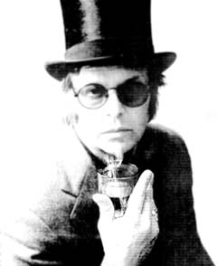

|
 |
|
| ТВИСТУНЫ-ПЯТИДЕСЯТНИКИ |
|---|
|
24 февраля исполнилось 50 лет одному из трех "китов" "Пушкинской-10 Николаю Медведеву".
15 апреля исполнилось 50 лет выдающемуся искусствоведу, о котором поэт сказал:
"все Чечот, все из меня…". |
| НЕОРДЕНАРНОЕ РЕШЕНИЕ | |
|---|---|
|
"Фак оф!" Неожиданный поступок совершил известный петербургский рокер Борис Гребенщиков. Орден "Славы" IV степени, врученный ему к пятидесятилетию Валентиной Матвиенко, он отослал Английской королеве Елизавете II в знак соболезнования по поводу безвременной кончины любимой собачки, уже имеющей в своей коллекции награды Джона Леннона и Мика Джаггера. |
|
| НОВОСТИ КУЛЬТУРНОЙ ЖИЗНИ |
|---|
|
ПРОСВЕЩЕНИЕ РОЖДАЕТ ЧУДОВИЩ Как услышу буги-вуги, В 18 веке просветители ставили естественных дикарей выше развращенных цивилизацией европейцев, барышни хотели видеть вонючих мужиков буколическими пастушками. В наше время левые интеллектуалы из ГЭЗ-21 стали осваивать культуры маргинальных групп. С этой целью были организованны вечеринки: "играем в садомазохистов", "в евреев", "в автостопщиков" и др. Вечеринки прошли довольно вяло, не удовлетворив радикального гедонизма художественной интеллигенции. Не зная, чем еще потешить свою матерость, передовые решили поиграть в панков, для чего была организована "панковская неделя". Загодя серьезно готовились к братанию с детьми стихийного протеста: на семинарах горячо спорили о философии панка, девушки декламировали панковскую поэзию. В день встречи ожидавшиеся Трупырь, Кочегар, Ослик, Панк Доступный, Юфа, Челюсть, Хуа Гофен и Мертвый не материализовались, но, как оказалось, хватило одного лидера группы "Народное Ополчение". Офигевший Алекс Оголтелый дошел сам, но спеть не смог; так что его мощами лишь украсили сцену. Панки, которых давно уже в клубы не пускают, на радостях стали орать и бить бутылки, а одна из жертв общественной несправедливости, не зная, как выразить свою признательность, плюнула в лицо директору "Арт-буфета". Встретить большего понимания своих прогрессивных намерений интеллектуальная элита не могла и поспешила вызвать милицию. "Ну, как, здорово я спел?" - спросил наконец пробудившийся Оголтелый у внезапно очнувшейся Актугановой. Пися Молокоотсосов ХОРОР, В НАТУРЕ По части выпивки, среди СПб деятелей культуры, философы сейчас являются признанными лидерами. Лучшие силы современной петербургской философии в лице Н.Иванова, Т.Горичевой, А.Секацкого и Д.Орлового, начав вместе поклоняться Бахусу, допились до того, что без смущения стали публично именовать друг друга Сократом, Аспазией, Диогеном и Платоном. Когда же наступило похмелье, они решили, что реальное ужасно, и поспешили донести эту весть миру в форме книги застольных бесед "Ужас реального". Реальное оказалось конкретным "11 сентября": презентация издания в галерее "Борей" 11 января стала продолжением попойки. Ужас заливали водкой. От страха и трепета, внушенного учителями, присутствующие молодые философы сильно накьеркегадили: били посуду, падали лицом в салат и блевали. За дискурс "апокалипсиса нау" перед директором "Борея" Т.Пономаренко ответит французская философия деконструкции. В натуре, завоет, как дитя. Ситуация в нашей философии, конечно же, ужас. Но не "Ужас! Ужас! Ужас!", как говорила папина тень. Мальдорор Руссо-Туристо |
ВОССТАНИЕ ВТОРОГО КЛАССА Маленький мальчик ел из плевательницы. Горожане, фланировавшие 12 января по площади Восстания, с удивлением взирали на буржуа-бутерброд, рекламирующего вопросы типа что? где? когда? и т.д. Это был в прошлом подававший надежды искусствовед Глеб Ершов, а ныне пролетарский революцьонер тов. Гурин-Дурин, таким странным образом призывающий угнетенные массы к восстанию. Группа товарищей, во главе с микровождем Д.Виленским (парткличка Шустрый), в составе О.Егоровой (тов. Цапля), А.Скидана (тов. Крупский) и др. тов., на деньги полученные от западных институций, начала революцьонную работу по подготовке восстания "освобождения труда". Также называется издаваемая ими газета для российских трудящихся на английском и финском языках. Свет всесильноверного марксистского учения вдруг озарил сорокалетних поэтов, фотографов и искусствоведов, дотоле не зревших страданий народных. Пока еще будущие вожди выглядят как зяблики, и появись они где-нибудь на пр.Большевиков, пролетарии подправили бы им фейсы под коржевского "Поднимающего знамя". В советское время доводилось видеть мальчиков, засовывающих себе в рот жвачку, выплюнутую иностранцем. Такое же омерзительное впечатление производит и двурушническая деятельность наших революционеров (группа без смущения назвалась в честь знаменитого провокатора, агента охранки - "Азеф"), пытающихся подсунуть всем продукты жизнедеятельности западных леваков как свежак.* Художник! Будь бдителен! Хитрожопые придурки - инструмент культурной диверсии. М.И.Карлсон * Мнение эксперта журнала "Гений": ИСКУССТВО ПОЛУТЬМЫ Оказывается, соц-арт не мертв, он просто сильно пахнет. На выставке "Дума о родине", организованной ГЦСИ в музее Ахматовой под ноги посетителям актуалисты попросту кидали дохлую рыбу. Искусство оказалось тоже тухлым - абсурдно запоздалый ремейк с московского соц-арта, отцветшего еще в семидесятые. Все то же паразитирование на власти (около десяти путиных во всех видах), глумление над верой (различные похабные "иконы"), плоский политкорректный юмор (джип среди "мишек в лесу"). Выставка оставляет психоделическое ощущение овердозы дурного вкуса. ИКОНОБОРЦЫ Актуалисты рубят иконы и пишут на них дурные слова. Верующие в ответ громят их выставки. Эти игры, активно пропагандируемые в СМИ, имеют характер коммерческой рекламы. Когда выставку пукающих икон Олега Янушевского в галерее "Спас" разгромила группа мужчин в масках, многие заподозрили, что их нанял сам художник. |
| РАССКАЗЫ О ХУДОЖНИКАХ |
|---|
|
ОБОШЕЛ… Однажды известная московская художница-концептуалистка Ольга Чернышова пришла в Берлинский Видео-архив с намерением продать туда свои работы. "А у нас в коллекции уже есть твои работы, - обрадовалась директор архива Катрин Беккер, - их нам продал петербуржец Дима Виленский". Художник! Будь бдителен! и т.д. С ослов потерпевшей СРЕЗАЛ… Гениальный художник Александр Арефьев вступил в группу еврейских художников-диссидентов "Алеф", а всем сомневавшимся в его богоизбранности тут же с готовностью демонстрировал свою обрезанную крайнюю плоть (следы некой, возможно тюремной, операции). Кроме того, он уверял, что его отец из Одессы, по имени Ария. "Конечно, у таких, как ты отцов должно быть минимум двое!" - прокомментировал его друг Рихард Васми. Л.Гуревич со слов Р.Васми ОБОЗНАЛИСЬ… Как-то художники группы "Речники" провожали на машине своего американского друга арабского происхождения. Около Большого дома их машину остановили для проверки документов. Неожиданно из Литейного-4 выскочила группа захвата и нейтрализовала художников, заподозрив в них террористов. Араб, конечно выглядел как араб, Егор Остров только что вернувшийся с Валаама был побрит и носил окладистую бороду, а Никита по прозвищу Лысый, соответственно, завершал галерею образов вахабизма. Разгоряченные чекисты повезли подозреваемых в мастерскую, где ожидали обнаружить бомбу. В мастерской в это время находился Роман Грузов, недавно вернувшийся из поездки в Пакистан. Воспользовавшись замешательством бойцов, испугавшихся гигантской сквотерской собаки Котика, Грузов успел поправить покосившийся портрет президента на стене. Чекисты, увидев открытое лицо ветерана афганца Грузова, а так же ателье, наполненное прекрасными работами Острова, поняли, что обознались. Экстаз Макаров |
| ОПРОВЕРЖЕНИЯ |
|---|
|
Кто-то ответит за это! Ред. |
| СМИ.ru ПО НИТКЕ. НОВОСТИ СУСАНИЗМА И СУСАНОВЕДЕНИЯ В РУНЕТЕ |
|---|
КАК ДЕЛАТЬ БИЗНЕС НА ИВАНЕ СУСАНИНЕ? http://mignews.com.ua Жители умирающего села в Костромской области начали зарабатывать деньги на имени Ивана Сусанина. Предприимчивые селяне разработали маршрут к месту гибели Сусанина, который погиб в этих местах 390 лет назад. Привлечь туристов не составило труда, о национальном герое все знают еще со школы. Роли между селянами строго разделены: одни мастерят сувениры, другие на примере своего хозяйства (! "СЪ") показывают, как жили наши предки. Группу артистов здесь называют главной. Ивана Сусанина выбирали всей деревней. Единогласно решили, что играть его будет егерь В.Шаховский. К роли он готовился основательно, читал исторические книги. Результат превзошел все ожидания: экскурсанты говорят, что он вылитый Сусанин. Маршрут к месту гибели очень опасный, поэтому прогулка начинается с подробного инструктажа. Туристам дают посох и опрыскивают защитой от комаров и клещей. Дойти до памятного места можно только по доскам, дорогу в два километра прокладывали всем селом. У сосны, где по преданию погиб Сусанин, актеры разыгрывают сцену гибели героя. В память о Сусанине можно поставить свечку за 3 р., бесплатно попить и умыться водой из священного колодца. Маршрут неподготовленные туристы преодолевают с трудом. Путь заканчивается у мемориального камня. Порядок здесь охраняет дед Александр. Про Ивана Сусанина он знает лучше любого экскурсовода. Говорит, многое о нем узнал от своей прабабки. Туристам дед поет самую популярную в этих местах песню. Весь деревенский сервис каждому туристу обойдется в тысячу рублей. Сейчас разрабатываются и новые услуги: посещение деревенской бани (…) и облет болота на дельтаплане. ДЕНЬ УСЕКНОВЕНИЯ http://pravda.ru Панихиду священники служат ежегодно - на день Усекновения главы Иоанна Предтечи 11 сентября (тогда же - именины Ивана Сусанина). Однако - с горестью замечает о.Павел - хотя и объявляют это заранее, народу съезжается очень и очень мало: "это безлюдье, при том, что народу в церковь много захаживает, - какое-то прямо знамение времени". В настоящее время известно 58 человек, повторивших подвиг Ивана Сусанина. Особенно много свидетельств сохранилось со времен Великой Отечественной войны. Как пишет Михаил Сизов, "подвиг этот, замешанный на хитрости и какой-то отчаянной отваге (знать, что дело твое гиблое, и продолжать играть простачка) - видно как-то свойственен русской душе. Что удивительно: у всех "сусаниных" на фото в музее, посвященном его подвигу большие окладистые бороды и русские лица". И ведь 58 - это только известных. А сколько их - безвестных. |
САНАТОРИЙ "ИВАН СУСАНИН" Краткое описание предоставляемых услуг: Адрес санатория:
157942, Костромская область, Красносельский район, п/о "Санаторий им. Ивана Сусанина", СУСАНИН ТРОФИ Тип: Трофи рейд. Уважаемые поклонники 4х4!
*** Список форумов Новая Зеландия - русский портал |
ВОЙНА ПОЛЬСКИХ И РУССКИХ СВЯТЫХ Беатификация польского архиепископа грозит ответной канонизацией Ивана Сусанина. Нынешний сезон Большого театра в Москве впервые за всю его историю открывает не традиционная оперная постановка Глинки "Иван Сусанин", а чистая иноземщина. Вместо русской патриотической оперы покажут "Турандот" Дж. Пуччини. Давняя московская традиция оказалась нарушенной. Вряд ли в этом стоит усматривать стремление предать забвению подвиг простого русского человека, отдавшего свою жизнь за царя и павшего от рук злочестивых ляхов. Но то, что нынешнее русское искусство хотят сделать менее патриотичным, а все более политкорректным и европоцентричным, это факт. В ответ на новость из Москвы земляки Сусанина подняли вопрос о его канонизации перед Православной Церковью. Во время визита Патриарха Алексия II в Кострому студенты Сельскохозяйственной академии обратились к Предстоятелю РПЦ с вопросом, когда же их земляк будет прославлен и причтен к лику святых покровителей земли русской. Его Святейшество благосклонно откликнулся на этот призыв и заявил, что дело канонизации должно начаться именно в здешней епархии, она должна установить его местное почитание, а затем Церковный Собор рассмотрит вопрос о провозглашении Сусанина всероссийским святым. Пока еще неясно, какой чин небесной иерархии наиболее подходит кандидату в святые, но скорее всего "мученик, от врагов веры убиенный". Наши духовные власти задумали это, чтобы насолить польским католикам и лично Папе Римскому в отместку за то, что они объявили блаженным католического иерарха, который поддержал восстание против Российской империи. Действительно, в ходе своего визита в Польшу Иоанн Павел II совершил мессу, во время которой провозгласил блаженным Сигизмунда-Феликса Фелинского, архиепископа Варшавского, профессора Римско-Католической духовной академии в Санкт-Петербурге, находившегося в ссылке за поддержку Польского восстания 1863 года. Вот как описывает эти события автор книги "Александр II и его время": "В июне 1860 года в Варшаве во время похорон вдовы генерала Совинского, убитого во время восстания 1831 г., стараниями духовенства на похороны собралось несколько тысяч поляков. Придя на кладбище, они надругались там над могилами православных, разразились потоками ругательств и угроз против русских". Таким образом, РКЦ начала процесс канонизации архиепископа, деятельность которого носила чисто политический характер. Если учесть цифру репрессированных ксендзов (294), то объектов для канонизаций еще много. В свое время Польское восстание вызвало огорчение не только в Санкт-Петербурге, но и в Риме. Тогдашний Папа Римский Пий IX с печалью спрашивал одного из польских священников, прибывшего в 1863 году из Польши: "Что делают ваши ксендзы? Это печальное дело". В России найдется достаточно имен для канонизации борцов против польского католицизма. Уже сейчас на очереди стоят Кузьма Минин и Дмитрий Пожарский. Но стоит ли начинать "войны святых"? Если такая война начнется, то все театральные сезоны в Большом будут открываться оперой "Жизнь за царя", а перед спектаклем будет служиться молебен главному герою. Иван Казаков |
| ПОЭТИЧЕСКИЙ УГОЛ |
|---|
В кущах галереи Navicula Artis расцвел новый поэтический талант.
Съ с гордостью осуществляет первую публикацию поэтессы.
|
Поле пшеничное;
Дискомфортик какой-то не слабый, |
Я всего лишь телочка,
За углом стоит мужчина, |
Подниму я ноги,
Бля сосала х вчера |
Ленинград, лениндождь, ленинснег.
| СУСАНИНЪ № 50 |
|---|